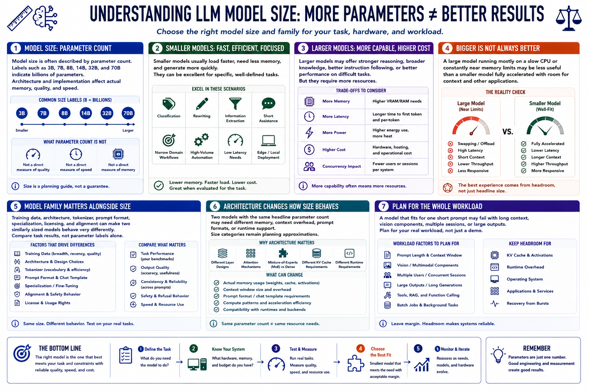

Understanding Model Size
Connecting to LMS... Progress: in progress

Narration
Model size is often described by parameter count. Labels such as 3B, 7B, 8B, 14B, 32B, and 70B indicate billions of parameters, although architecture and implementation affect actual memory, quality, and speed.
Smaller models usually load faster, need less memory, and generate more quickly. They can be excellent for classification, rewriting, extraction, short assistance, narrow domain workflows, and high-volume automation when evaluated carefully.
Larger models may offer stronger reasoning, knowledge, instruction following, or difficult-task performance, but they require more memory and compute. They may also increase latency, power use, deployment cost, and the consequences of concurrency.
Bigger is not always better. A large model running mostly on a slow CPU or constantly near memory limits may be less useful than a smaller model fully accelerated with room for context and other applications.
Model family matters alongside size. Training data, architecture, tokenizer, prompt format, specialization, licensing, and alignment can make two similarly sized models behave very differently. Compare task results, not parameter labels alone.
Architecture can also change compute and cache behavior. Two models with the same headline parameter count may need different memory, context overhead, prompt formats, or runtime support, so size categories remain planning approximations.
Plan for the whole workload. A model that fits for one short prompt may fail with long context, vision components, multiple sessions, or large outputs. Keep memory headroom for cache, runtime, operating system, and recovery from bursts.